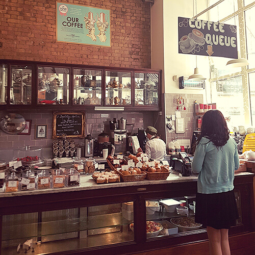
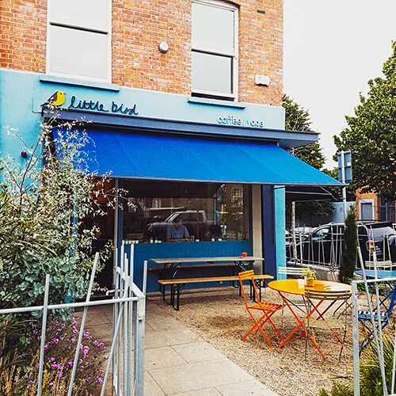

icoffeemap
HOME
Toggle navigation
CAFES
DUBLIN2
DUBLIN6
DUBLIN8
GALLARY
CONTACT
Wall & Keogh
IFI cafe bar
Fallon & Byrne

Two Fifty Square
Grove Road Cafe
Fallon & Byrne
Little Bird

The Cake Cafe
Container Coffee